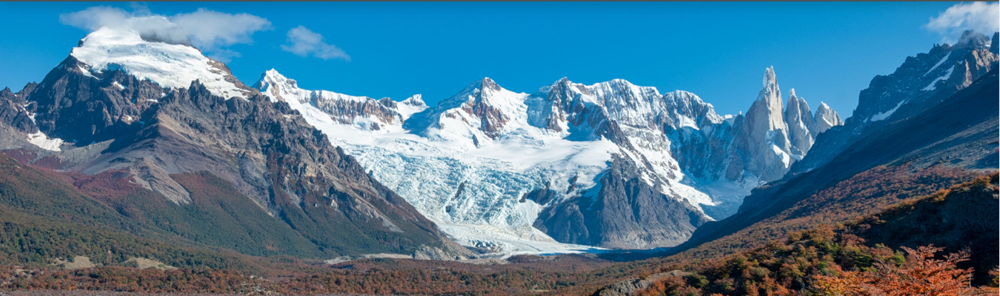
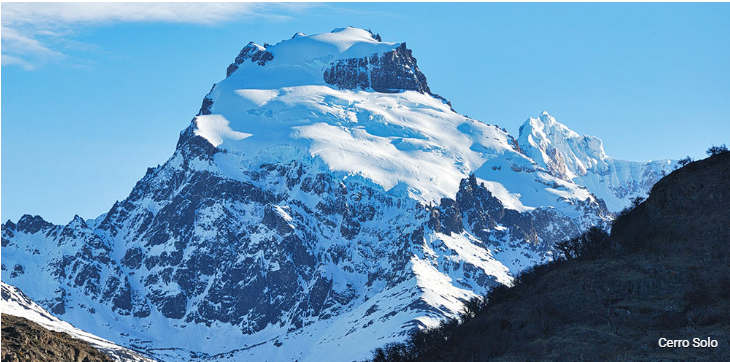
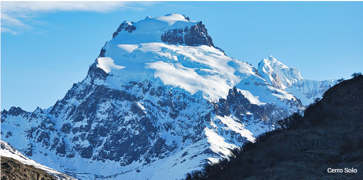

ADENTRATE EN LA NATURALEZA
La mayoría de los senderos son libres y gratuitos y no necesitas ninguna experiencia previa en la montaña. En los recorridos más exigentes puedes contratar un guía para tu mayor tranquilidad y así conocer al máximo cada lugar. Ya sea que tengas sólo unas horas o que te quedes varios días, aquí están los imperdibles de El Chaltén.
 


Los especialistas en aventura locales te proponen vivir diferentes actividades en este paraíso de montaña. En algunos casos podrás conocer sitios imposibles de llegar de otra manera. De acuerdo a tu edad, tiempo disponible y estado físico, puedes optar desde la visita guiada a sitios históricos hasta una travesía en el Hielo Continental Patagónico Sur.